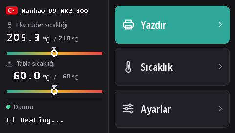

Duplicator 9 dokunmatik ekranına firmware yükleme
MK1'den MK3'e her D9'da aynı DWIN T5 dokunmatik ekran (480 × 272) bulunur. Bu firmware'lerle ekranda, microSD karttan yüklenen, 16 dilli yeni arayüzümüz DGUS Reloaded 2.0 çalışır.
DWIN_SET.zip dosyasını indir (DGUS Reloaded 2.0)
DGUS Reloaded 2.0 neler getiriyor
- 16 dil: English, Français, Deutsch, Español, Italiano, Português, Nederlands, Polski, Türkçe, Русский, العربية, हिन्दी, 中文, 日本語, 한국어, Bahasa Indonesia. Dili değiştirmek için ana ekranda yazıcı adının yanındaki bayrağa dokunun; yazıcı seçiminizi hatırlar.
- Filament sensörü sayfası: Ayarlar → Filament → Filament sensörü. Bkz. Filament sensörü.
- Kalıcı bir durum satırı: son mesaj, örneğin Ready, 30 saniye sonra kaybolmak yerine ekranda kalır.
- Nozul ve tabla için, hedef değeri işaretli sıcaklık göstergeleri.
- Tüm sayfalara yeni bir görünüm: koyu tema, daha büyük düğmeler, açılır pencerelerde piktogramlar.

1. microSD kartı biçimlendirin
- Windows: Windows 11 çoğu zaman FAT32 biçimlendirmez; GUIFormat kullanın ve ayırma birimi boyutunu 4096 yapın.
- Linux:
sudo mkfs.fat -F 32 -s 8 /dev/sdX1(önce aygıtılsblkile kontrol edin). - macOS:
sudo newfs_msdos -F 32 -c 8 /dev/diskN(diskutil listile kontrol edin).
2. Dosyaları kopyalayın
DWIN_SET.zip arşivini açın ve DWIN_SET klasörünün tamamını kartın kök dizinine kopyalayın.
3. Yükleyin
- Yazıcıyı kapatın ve fişini çekin.
- Ekranın arkasına, microSD yuvasının bulunduğu yere ulaşmak için tabanın ön kısmını açın.
- Kartı takın ve yazıcıyı açın. Ekran 10 ile 30 saniye içinde güncellemeyi gösterir; normal şekilde yeniden başlayana kadar bekleyin, toplamda 1 ile 3 dakika.
- Yazıcıyı kapatın, kartı çıkarın, tabanı kapatın.
Wanhao'nun D9 ekran güncelleme videosu yuvanın yerini gösteriyor.
Nereden geliyor
DGUS Reloaded 2.0, DGUS Reloaded 1.0.3 arayüzünü (önce Desuuuu, sonra Neo2003 tarafından geliştirildi) sayfa sayfa yeniden çizer. Kaynak kodu, ekran dosyalarını üreten program ve çeviriler GitHub üzerinde. Dilinizde yanlış ya da kulağa garip gelen bir kelime mi var? Bize Discord üzerinden söyleyin ya da GitHub'da bir sorun kaydı açın.
DGUS Reloaded 1.0.3'e dönmek için, örneğin v2.0.9'dan eski bir firmware ile, DWIN_SET_1.0.3.zip dosyasını aynı şekilde yükleyin.
Wanhao'nun ekranına geri dönmek
Wanhao'nun ekran firmware'i yalnızca Wanhao'nun anakart firmware'iyle çalışır. MK1: MK1 sayfasındaki ilgili sürümün ekran dosyası. MK1 + kit, MK2 ve MK3: DWIN_SET_MK2.zip. Prosedür aynıdır.